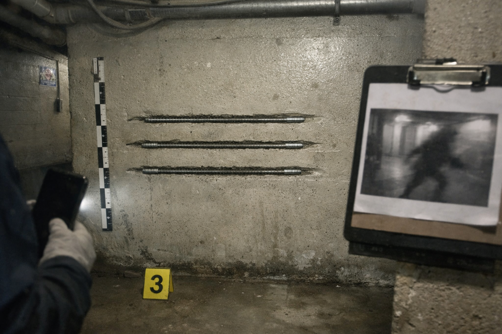
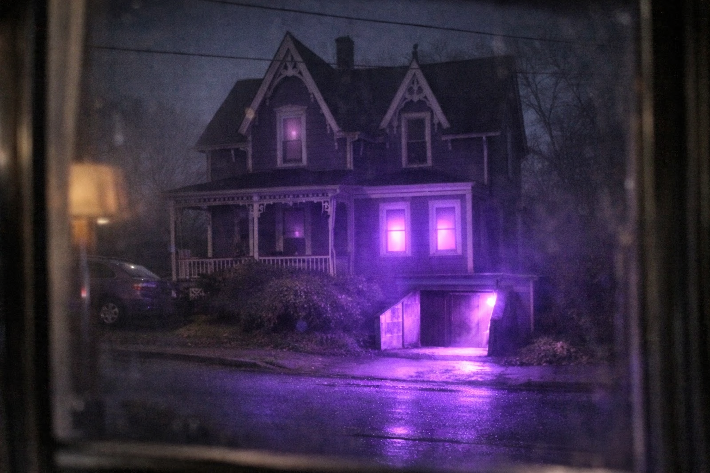

⚠️ HOTSPOT — SIGNALEMENTS TERRAIN
Dernières observations et photos capturées à la volée. Sources multiples — fiabilité variable.
URGENT
HS-001
Décharge électrique non naturelle
📍 Hell's Kitchen, New York
🕐 12/01/2025 — 23h47
MUTANT PRÉSUMÉ
CONFIRMÉ
HS-002
Vol stationnaire au-dessus du Bronx
📍 South Bronx, New York
🕐 08/01/2025 — 04h12
HOMO SUPERIOR

RÉCENT
HS-003
Griffures profondes sur structure en béton
📍 Toronto, Canada
🕐 15/01/2025 — 19h30
MUTANT PRÉSUMÉ
CONFIRMÉ
HS-004
Homme escaladant un mur avec des toiles — Saut surhumain
📍 Central Park, New York
🕐 18/01/2025 — 23h05
HOMO SUPERIOR
CONFIRMÉ
HS-005
Télékinésie — Véhicule projeté à 15 mètres
📍 Camden, Londres
🕐 20/01/2025 — 21h33
HOMO SUPERIOR

RÉCENT
HS-006
Emanation lumineuse violette — Origine inconnue
📍 Westview, New Jersey
🕐 22/01/2025 — 02h15
NON IDENTIFIÉ⚠️ AVERTISSEMENT
Les signalements présentés ici proviennent de sources terrain non vérifiées. Le niveau de fiabilité varie. Si vous disposez d'informations complémentaires, utilisez le canal de transmission sécurisé.